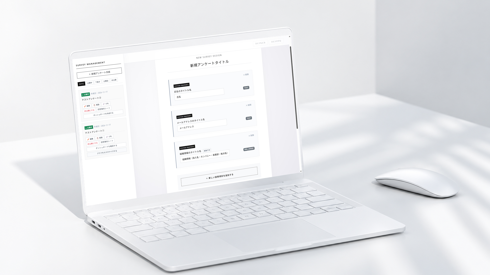
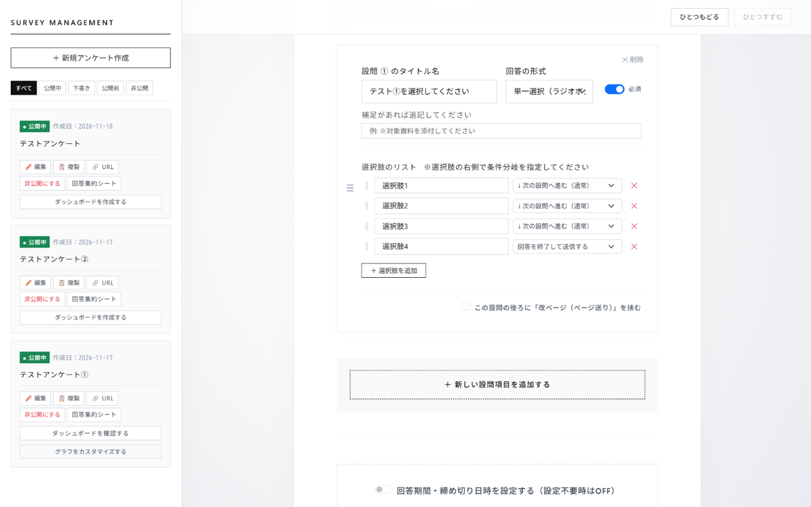
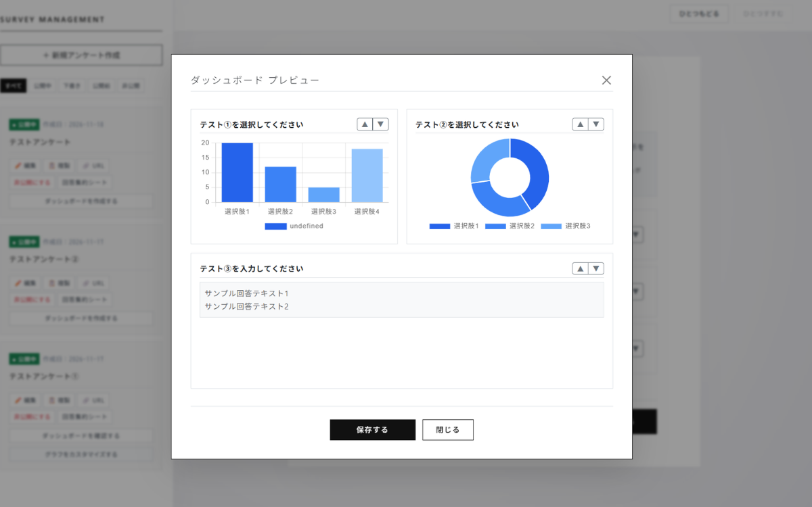

制作概要
Outline
従業員数5,000名以上の規模となるグループ全体で実施される各種社内アンケートの「作成・回答集計・回答率の可視化」を一貫して行える、業務効率化を目的としたWebアプリケーション。企画・提案からUI/UXデザイン、Google Apps Script（GAS）を用いたWebアプリの実装までを担当しました。
Target
アンケートを作成・管理する管理本部および各事業部の推進担当者（システム利用者）、ならびに回答を行う全従業員約5,000名（エンドユーザー）
Period & Role
UI/UXデザイン：2週間（Figma）
フロントエンド・システム実装：3週間（HTML / CSS / JavaScript / GAS）
担当領域：課題抽出・企画提案 / 画面設計・UIデザイン / フロントエンド
Purpose
5,000名規模の回答状況を各法人・拠点単位でリアルタイムに可視化し、未回答エリアへのフォロー効率化と、手作業で行っていた集計工数のゼロ化を実現すること
内容詳細
Detail
「集計工数ゼロ」と「迷わない入力体験」の両立。
管理側・回答側双方のストレスをなくすUI設計。


これまで各拠点や事業部ごとの回答率の追っかけや集計に膨大な工数がかかっていました。そこで、全社の集計結果だけでなく「どの事業部・拠点が何名中何名回答しているか」が一目で把握できるダッシュボードを設計し、フォローが不足している箇所を即座に特定できるようにしました。
管理者画面では、ITツールに不慣れな担当者でも直感的に操作できるよう、プレビュー画面で仕上がりを確認しながらグラフの種類や表示項目を簡単にカスタマイズできるUIを構築。また、社内のGoogle環境と連携し、回答データは発行者のみが閲覧できるスプレッドシートへ自動集約されるセキュアな仕組みを整えています。
さらに、回答する社員側の負担も減らすため、従来は手入力していた所属情報にインクリメンタル検索を導入。会社名の一部を入力するだけでカンパニー・事業部名が自動反映され、該当拠点を選択するだけで完了するストレスフリーな導線を設計しました。